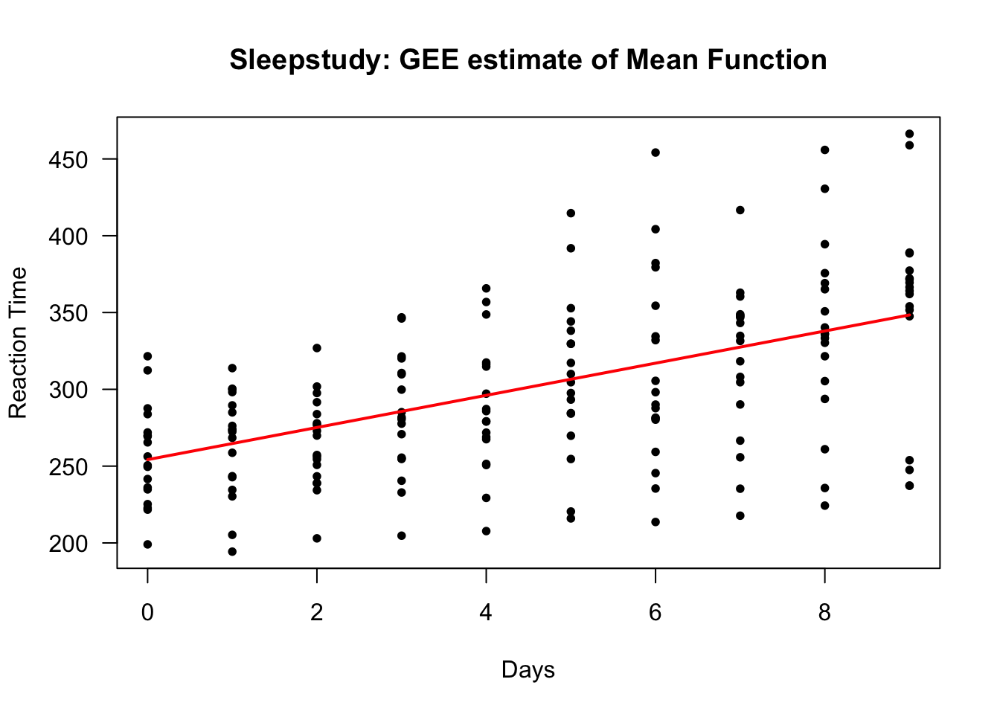
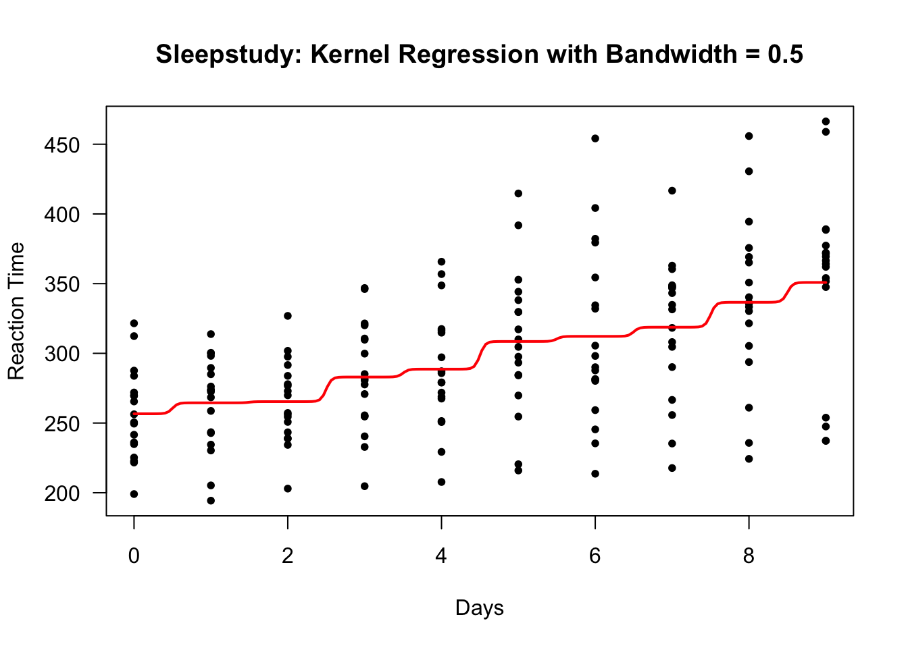
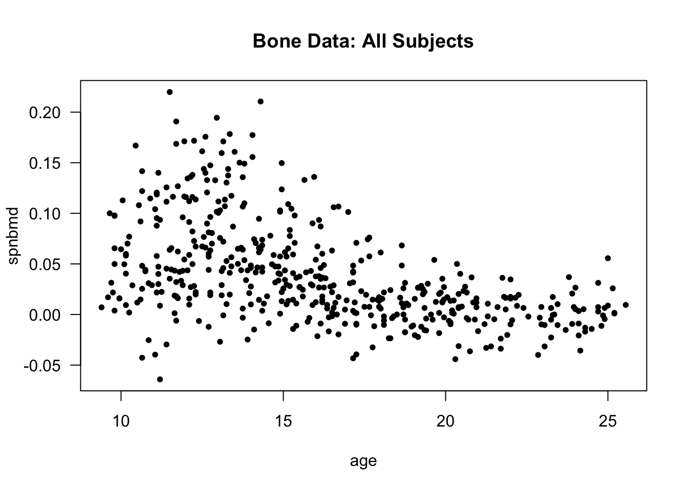
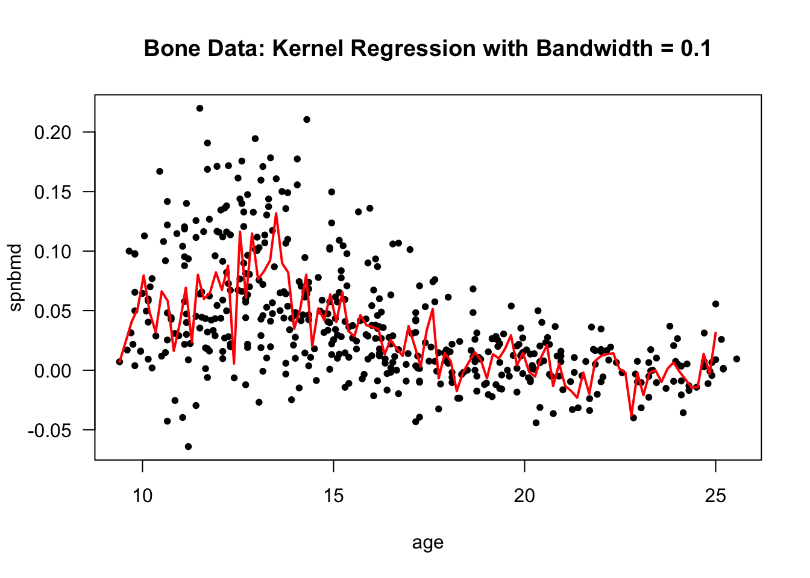

Chapter 3 Nonparametric Regression with Longitudinal Data
3.1 Notation
- For longitudinal data, we will again use the following notation:
Individual \(i\) has observations for both the outcome and the covariates at times \(t_{i1}, \ldots, t_{in_{i}}\)
\(Y_{ij}\) is the outcome for individual \(i\) at time \(t_{ij}\).
\(\mathbf{x}_{ij}\) is the vector of covariates at time \(t_{ij}\).
The \(i^{th}\) individual has \(n_{i}\) observations: \(Y_{i1}, \ldots, Y_{in_{i}}\).
There will be \(m\) individuals in the study (so \(1 \leq i \leq m\)).
A general regression model relating \(Y_{ij}\) and \(\mathbf{x}_{ij}\) is the following: \[\begin{equation} Y_{ij} = \mu( \mathbf{x}_{ij} ) + \varepsilon_{ij} \nonumber \end{equation}\]
Here, \(\mu(\mathbf{x}_{ij}) = E(Y_{ij}| \mathbf{x}_{ij})\) is the “mean function”.
In nonparametric approaches to estimating \(\mu(\cdot)\), we will try to estimate \(\mu(\mathbf{x})\) without making any strong assumptions about the form of \(\mu( \mathbf{x} )\).
Basically, in a nonparametric approach, there is not a fixed set of parameters describing the mean function that does not change as the sample size grows.
3.2 Kernel Smoothing
3.2.1 Description of Kernel Regression
With kernel regression, we estimate the mean function \(\mu(\mathbf{x})\) at \(\mathbf{x}\) by taking a weighted “local average” of the \(Y_{ij}\) around \(\mathbf{x}\).
Specifically, the kernel regression estimate of \(\mu(\cdot)\) at a point \(\mathbf{x}\) can be expressed as \[\begin{equation} \hat{\mu}( \mathbf{x} ) = \sum_{i=1}^{m}\sum_{j=1}^{n_{i}} w_{ij}(\mathbf{x})Y_{ij} \end{equation}\]
The “weights” at the point \(\mathbf{x}\) are given by \[\begin{equation} w_{ij}(\mathbf{x}) = \frac{ K\Big( \frac{\mathbf{x} - \mathbf{x}_{ij}}{ h_{n} }\Big) }{ \sum_{i=1}^{m}\sum_{j=1}^{n_{i}} K\Big( \frac{\mathbf{x} - \mathbf{x}_{ij}}{ h_{n} }\Big) } \tag{3.1} \end{equation}\]
When using the weights (3.1), \(\hat{\mu}(\mathbf{x})\) is known as the Nadaraya-Watson esitmator.
The function \(K(\cdot)\) in (3.1) is referred to as the “kernel function”.
- The kernel function \(K(\cdot)\) is:
- A smooth nonnegative function
- Symmetric around \(0\)
- Has a mode at \(0\) and decays the further you go away from \(0\)
A common choice of \(K(\cdot)\) is the Gaussian kernel \[\begin{equation} K(\mathbf{u}) = \exp\Big\{ - \frac{||\mathbf{u}||^{2}}{2} \Big\} \end{equation}\]

Observations where \(\mathbf{x}_{ij}\) is “close” to \(\mathbf{x}\) will be given a larger weight \(w_{ij}(\mathbf{x})\) because \(||\mathbf{x} - \mathbf{x}_{ij}||^{2}\) will be small.
Similarly, observations where \(\mathbf{x}_{ij}\) is “far away” from \(\mathbf{x}\) will be given a smaller weight \(w_{ij}(\mathbf{x})\) because \(||\mathbf{x} - \mathbf{x}_{ij}||^{2}\) will be small.
The term \(h_{n} > 0\) is referred to as the bandwidth.
The bandwidth determines how many observations have a strong impact on the value of \(\hat{\mu}( \mathbf{x} )\).
If the bandwidth \(h_{n}\) is small, observations close to \(\mathbf{x}\) will largely determine the value of \(\hat{\mu}(\mathbf{x})\).
If the bandwidth \(h_{n}\) is large, the value of \(\hat{\mu}(\mathbf{x})\) will be more heavily influenced by a larger number of observations.
Kernel regression estimates with a smaller bandwidth will be more “wiggly” and non-smooth.
Kernel regression estimates with a larger bandwidth will be more smooth.
3.2.2 Kernel Regression in the sleepstudy data
Again, let’s look at the sleepstudy data from the lme4 package.
The sleepstudy data had 18 participants with reaction time measured across 10 days.
## Loading required package: Matrix## Reaction Days Subject
## 1 249.5600 0 308
## 2 258.7047 1 308
## 3 250.8006 2 308
## 4 321.4398 3 308
## 5 356.8519 4 308
## 6 414.6901 5 308
We can estimate the marginal mean function for the sleepstudy data by using a GEE.
- We will assume that reaction time is a linear function of time on study:
- That is, we will assume that \(\mu(t) = \beta_{0} + \beta_{1} t\).
library(geepack)
## Use AR(1) correlation structure
sleep.gee <- geeglm(Reaction ~ Days, data=sleepstudy, id=Subject, corstr="ar1") - To get the value of the estimated regression function, we can use the first \(10\) fitted values (because the fitted values for each subject are the same as the overall mean function)
## Estimated mean function at each time point
gee.regfn <- sleep.gee$fitted.values[1:10,1]
### Now plot the estimated mean function
plot(sleepstudy$Days, sleepstudy$Reaction, las=1, ylab="Reaction Time", xlab="Days",
main="Sleepstudy: GEE estimate of Mean Function", type="n")
points(sleepstudy$Days, sleepstudy$Reaction, pch=16, cex=0.8)
lines(0:9, gee.regfn, lwd=2, col="red")
To find a kernel regression estimate of the mean function, you can use the ksmooth function in R.
One thing to note is that ksmooth only works for a scalar covariate.
Using a bandwidth of \(0.5\) and a Gaussian kernel, we can find the kernel regression estimate of the mean function with the following R code:
This will return a list with an “x vector” and a “y vector”.
The
xvector will be the vector of points at which the regression function is estimated. Theyvector will be a vector containing the estimated values of the regression function.
- Let’s plot the estimated mean function to see what it looks like:
plot(sleepstudy$Days, sleepstudy$Reaction, las=1, ylab="Reaction Time", xlab="Days",
main="Sleepstudy: Kernel Regression with Bandwidth = 0.5", type="n")
points(sleepstudy$Days, sleepstudy$Reaction, pch=16, cex=0.8)
lines(sleep.kernel$x, sleep.kernel$y, lwd=2, col="red")
This bandwidth looks too small. There are clear “near jumps” in between some of the days.
We can try a bandwidth of \(1\) to see if we can smooth this out a bit.
sleep.kernel.bw1 <- ksmooth(sleepstudy$Days, sleepstudy$Reaction, kernel="normal",
bandwidth = 1)
plot(sleepstudy$Days, sleepstudy$Reaction, las=1, ylab="Reaction Time", xlab="Days",
main="Sleepstudy: Kernel Regression with Bandwidth = 1", type="n")
points(sleepstudy$Days, sleepstudy$Reaction, pch=16, cex=0.8)
lines(sleep.kernel.bw1$x, sleep.kernel.bw1$y, lwd=2, col="red")
3.2.3 Bandwidth Selection
The bandwidth can be chosen to get a level of smoothness that looks good visually.
For example, when observations are only collected daily like in the sleepstudy you will probably want to choose a bandwidth so that the estimated mean function does not have obvious bumps in between days.
To choose the bandwidth \(h_{n} > 0\) using a formal criterion, a common approach is to use leave-one-out cross-validation.
In the context of longitudinal data, it is usually suggested that you leave one subject out at a time rather than one observation at a time (Rice and Silverman (1991)).
The reason for this is that the subject-level leave-one-out cross-validation score is a good estimate of the mean-squared prediction error of regardless of what the correlation structure is for the within-subject outcomes.
This is not the case when using observation-level leave-one-out cross-validation.
The subject-level leave-one-out cross-validation score for a given bandwidth choice is defined as \[\begin{equation} \textrm{LOOCV}(h_{n}) = \sum_{i=1}^{n}\sum_{j=1}^{m_{i}} \{ Y_{ij} - \hat{\mu}_{h_{n}}^{(-i)}(\mathbf{x}_{ij}) \}^{2} \end{equation}\]
Here, \(\hat{\mu}_{h_{n}}^{(-i)}(\mathbf{x}_{ij})\) is the mean function estimate when using bandwidth \(h_{n}\) and when ignoring the data from subject \(i\).
3.2.4 Another Example: The Bone Data
As another example, we can use the “bone” dataset.
This is a longitudinal dataset with typically 2 or 3 observations per individual.
bonedat <- read.table("https://web.stanford.edu/~hastie/ElemStatLearn/datasets/bone.data",
header=TRUE)
head(bonedat)## idnum age gender spnbmd
## 1 1 11.70 male 0.018080670
## 2 1 12.70 male 0.060109290
## 3 1 13.75 male 0.005857545
## 4 2 13.25 male 0.010263930
## 5 2 14.30 male 0.210526300
## 6 2 15.30 male 0.040843210- For this data, the interest would be to model the mean function for bone mineral
density (the variable
spnbmd) as a function ofage

- We can compute the leave-one-out cross-validation score for the bone data for different values of \(h_{n}\) (here \(0.1 \leq h_{n} \leq 1\)) with the following code:
nh <- 200
hh <- seq(.1, 1, length.out=nh)
LOOCV <- rep(0, nh)
subj.list <- unique(bonedat$idnum)
nsubj <- length(subj.list)
for(k in 1:nh) {
ss <- 0
for(i in 1:nsubj) {
ind <- bonedat$idnum==subj.list[i]
yy <- bonedat$spnbmd[-ind]
xx <- bonedat$age[-ind]
tmp <- ksmooth(xx, yy, kernel="normal", bandwidth = hh[k],
x.points=bonedat$age[ind])
mu.hat <- tmp$y
ss <- ss + sum((bonedat$spnbmd[ind] - mu.hat)^2)
}
LOOCV[k] <- ss
}
hh[which.min(LOOCV)] ## best seems to be 0.1## [1] 0.1- In this case, the best bandwidth was \(0.1\) according to the subject-level leave-one-out cross-validation criterion.
- The kernel regression estimate of the mean function with the bandwidth of \(0.1\) is plotted below:
bone.kernel <- ksmooth(bonedat$age, bonedat$spnbmd, kernel="normal",
bandwidth = 0.1, x.points=seq(9.4, 25, length.out=100))
plot(bonedat$age, bonedat$spnbmd, las=1, ylab="spnbmd", xlab="age",
main="Bone Data: Kernel Regression with Bandwidth = 0.1", type="n")
points(bonedat$age, bonedat$spnbmd, pch=16, cex=0.8)
lines(bone.kernel$x, bone.kernel$y, lwd=2, col="red")
- Using a bandwidth of \(1\) gives a smoother mean function estimate.

The performance of kernel regression methods can degrade quickly as we move to higher dimensions. The convergence rate of the estimated regression function to the true regression function slows substantially as we the dimension of the covariates \(\mathbf{x}_{ij}\).
“Curse of dimensionality” - need very large datasets to have a sufficient number of observations near a given point \(\mathbf{x}\).
Another approach when using multiple covariates is to use generalized additive models.
With generalized additive models, the mean function is expressed as the sum of several univariate nonparametric functions: \[\begin{equation} \mu(\mathbf{x}) = \beta_{0} + \mu(x_{1}) + \mu(x_{2}) + \ldots + \mu(x_{p}) \end{equation}\]
3.3 Regression Splines
3.3.1 Overview
Using regression splines is another common nonparametric approach for estimating a mean function.
The most common type of spline used in the context of nonparametric regression is the cubic spline.
- Definition: A cubic spline with knots \(u_{1} < u_{2} < \ldots < u_{q}\) is a function \(f(x)\) such that
- \(f(x)\) is a cubic function over each of the intervals \((-\infty, u_{1}], [u_{1}, u_{2}], \ldots, [u_{q-1}, u_{q}], [u_{q}, \infty)\).
- \(f(x)\), \(f'(x)\), and \(f''(x)\) are all continuous functions.
A commonly used set of basis functions for the set of cubic splines with knots \(u_{1} < u_{2} < \ldots < u_{q}\) is the B-spline basis functions.
This means that if \(\varphi_{1, B}(x), \ldots, \varphi_{q+4, B}(x)\) are the B-spline basis functions for the set of cubic splines with knots \(u_{1} < u_{2} < \ldots < u_{q}\), we can represent any cubic spline estimate of the mean function as \[\begin{equation} \hat{\mu}(x) = \sum_{j=1}^{q+4} \hat{\beta}_{1}\varphi_{j, B}(x) \end{equation}\]
The nice thing about using regression splines is that they can estimated in the same way as you would in a typical regression setting.
The columns of the design matrix will be filled in with the values of \(\varphi_{j,B}(x_{i})\).
3.3.2 Regression Splines with Longitudinal Data in R
- Regression splines can be fitted in R by using the
splinespackage
- The
bsfunction insplinesgenerates the B-spline “design” matrix
x- vector of covariates values. This can also just be the name of a variable whenbsis used inside a function such asgeeglm.df- the “degrees of freedom”. For a cubic spline this is actually \(q + 3\) rather than \(q + 4\). If you just enterdf, thebsfunction will pick the knots for you.knots- the vector of knots. If you don’t want to pick the knots, you can just enter a number for thedf.degree- the degree of the piecewise polynomial. Typically,degree=3which would be a cubic spline.
You can directly use regression splines within the “GEE framework”.
In this case, you can model the marginal mean (or part of the marginal mean function) with a spline.
For example, with the bone data, suppose we want to fit separate curves for the male and female groups.
We could express the mean function \(\mu(\cdot)\) as \[\begin{equation} \mu(t_{ij}) = f_{0}(t_{ij}) + A_{ij}f_{1}(t_{ij}) \tag{3.2} \end{equation}\]
\(f_{0}(\cdot)\) and \(f_{1}(\cdot)\) would be modeled with regression splines.
\(t_{ij}\) is the value of age for observation (i,j)
\(A_{ij} = 1\) if the \((i,j)\) observation corresponds to a male individual and \(A_{ij} = 0\) if the \((i,j)\) observation corresponds to a female individual.
- To fit model (3.2) using the
geepackpackage, you can use the following code
library(splines)
gee.bone <- geeglm(spnbmd ~ bs(age, df=6) + gender*bs(age,df=6), id=idnum, data=bonedat)- We can plot the estimated mean functions by first extracting the fitted values for both the male and female groups:
male.fitted <- gee.bone$fitted.values[bonedat$gender=="male"]
male.age <- bonedat$age[bonedat$gender=="male"]
female.fitted <- gee.bone$fitted.values[bonedat$gender=="female"]
female.age <- bonedat$age[bonedat$gender=="female"]- Now, plot the fitted curves for both groups
plot(bonedat$age, bonedat$spnbmd, lwd=1, xlab="age", ylab="spnbmd",
main="Regression Splines for the Bone Data")
points(bonedat$age[bonedat$gender=="male"], bonedat$spnbmd[bonedat$gender=="male"],
cex=0.8)
points(bonedat$age[bonedat$gender=="female"], bonedat$spnbmd[bonedat$gender=="female"],
pch=16, cex=0.8)
lines(male.age[order(male.age)], male.fitted[order(male.age)], col="red", lwd=2)
lines(female.age[order(female.age)], female.fitted[order(female.age)], col="blue",
lwd=2)
legend("topright", legend=c("Male", "Female"), col=c("red", "blue"), lwd=3, bty='n')
References
Rice, John A, and Bernard W Silverman. 1991. “Estimating the Mean and Covariance Structure Nonparametrically When the Data Are Curves.” Journal of the Royal Statistical Society: Series B (Methodological) 53 (1): 233–43.